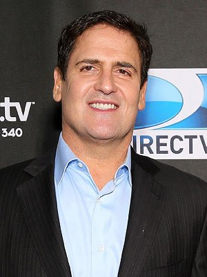

 Mark Cuban was born July 31, 1958 in Pittsburgh, Pennsylvania, to Shirley (Feldman) and Norton Cuban, an automobile upholsterer. He graduated from Indiana University in 1981 with a degree in Business. After college, Cuban moved to Dallas, Texas and created a computer consulting business called "MicroSolutions" which transformed him into a millionaire when he sold the business to CompuServe in 1990. In 1995, Mark and his business partner Todd Wagner began working on an idea (that later became known as Broadcast.com) in order to stream live events over the Internet. This innovative duo sold their company to Yahoo.com in 1999 for billions of dollars in Yahoo! stock. Mr. Cuban went on to purchase the NBA's Dallas Mavericks basketball franchise for $285 million on January 14, 2000, dramatically changing the team for the better. Mark's brilliant ability to lead this organization and mold the Mavericks into an evolving superior force led the team to reach the NBA Finals in 2006 for the first time in franchise history.
Beyond that, Cuban launched the high-definition television network "HDNet" in September of 2001 with Philip Garvin. HDNet provides the highest level of digital broadcast quality available. Mark and Todd Wagner established a media company named "2929" with holdings that cover many aspects of entertainment. This includes film production companies HDNet Films and 2929 Productions, movie distributor Magnolia Pictures, home video distributor Magnolia Home Entertainment, the Landmark Theatres chain, and a stake in Lions Gate Entertainment.
Mr. Cuban is famous for his bold, unambiguous views and mindset, which has a great deal to do with his perpetual success. He continues to challenge the status quo in the worlds of media and technology. In 2005, Mark announced he was financially backing the underdog in a U.S. Supreme Court "peer-to-peer" file-sharing case. Also in 2005, Cuban experimented with a "day-and-date" model when he produced the film Bubble (2005) which was released simultaneously across theatrical, television and home video platforms. His stated goal of collapsing the traditional release windows was intended to give consumers the choice in terms of exactly how they might be interested in viewing a film.
It's impossible to truly know what Mark Cuban will create, produce, buy, or sell next, but you can bet it will be considered "genius" just like the man himself.
-IMDb Mini Biography By: Robb Hand